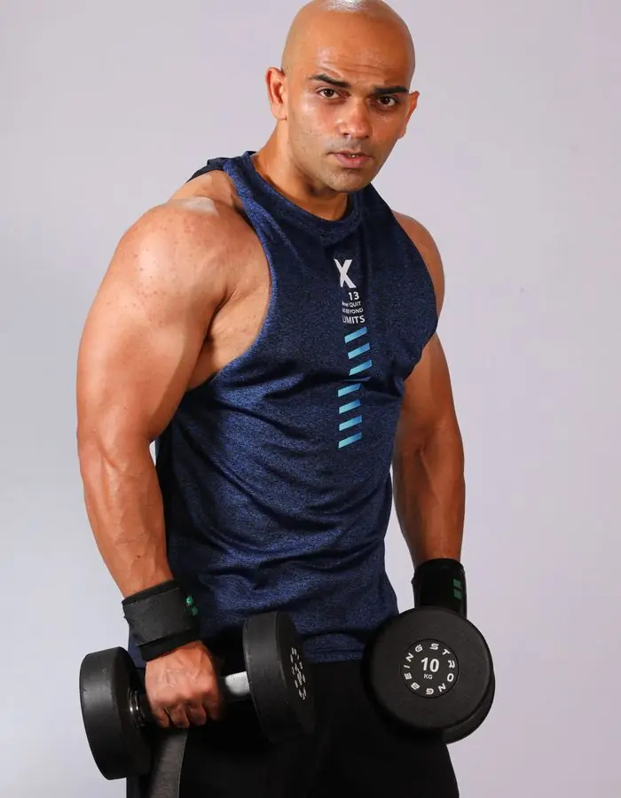
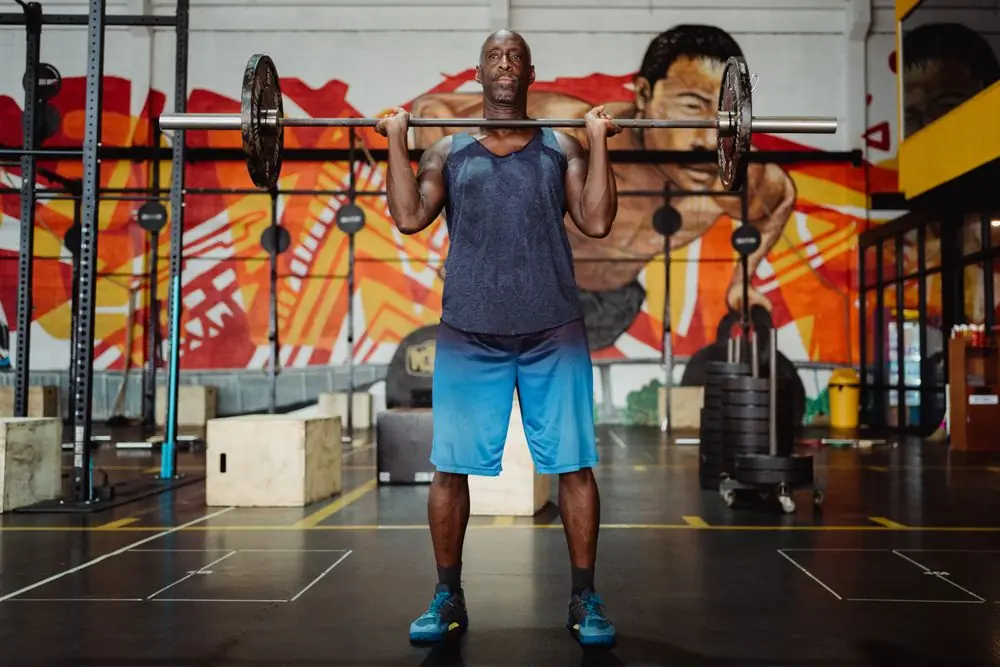
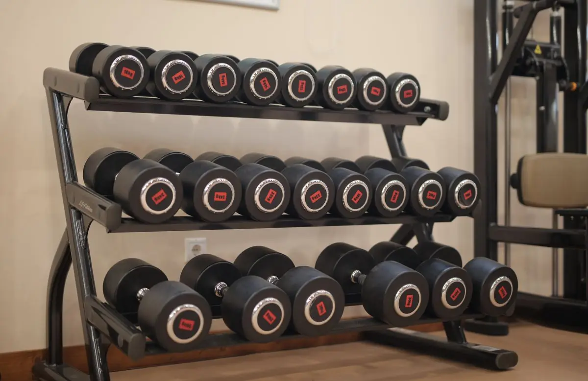
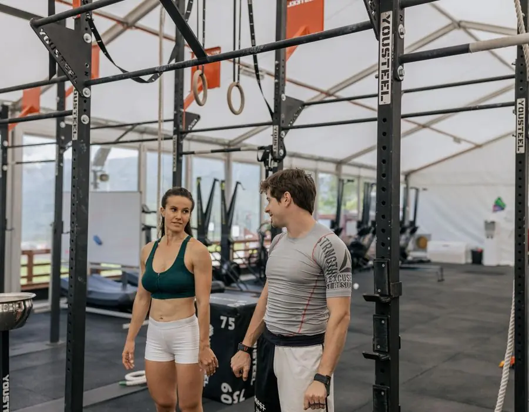

Безкоштовно · без реєстрації
Рік тренувань. Один чіткий план.
Два річні плани — для чоловіків і для жінок — і калькулятор калорій. Кожен місяць розписаний: вправи з фото, підходи, повторення й прогресія.
Або почни з калькулятора калорій

розписано
Обери, з чого почати
Три інструменти на весь рік

План для чоловіків
Фундамент, сила і маса, гіпертрофія, пікова сила. 3–5 тренувань на тиждень.
Відкрити план
План для жінок
Постава, ноги й сідниці, рельєф, сила. 3–4 тренування на тиждень.
Відкрити план
Калькулятор калорій
Норма калорій, білки, жири, вуглеводи і вода — під твою ціль.
ПорахуватиЯк побудований рік
4 етапи. Кожен — на 3 місяці.
Навантаження росте поступово, а кожен третій місяць закінчується легким тижнем, щоб тіло встигало відновлюватися.
- 01Місяці 1–3
Фундамент
Техніка базових вправ, 3 тренування на тиждень, звикаємо до режиму.
- 02Місяці 4–6
Сила й форма
Спліт на 4 дні: кожна група мʼязів працює двічі на тиждень.
- 03Місяці 7–9
Обсяг і рельєф
Більше підходів, коротший відпочинок, суперсети й інтервальне кардіо.
- 04Місяці 10–12
Пік
Найважчі ваги року, перевірка особистих рекордів і план на наступний рік.

Харчування
Тренування — половина результату
Без правильної кількості калорій навіть найкращий план працює вполовину. Калькулятор порахує норму для схуднення, підтримки чи набору маси і розкладе її на білки, жири й вуглеводи.
- Формули Міффліна — Сан-Жеора і Кетча — Макардла
- Білки, жири, вуглеводи в грамах
- Норма води й розподіл на прийоми їжі
Правила
Шість правил, які тримають план
Розминка
5–7 хв кардіо і 1–2 легкі підходи першої вправи. Без розминки не беремо робочу вагу.
Прогресія
Додавай вагу лише тоді, коли всі підходи виходять із правильною технікою. Ліпше на 2,5 кг менше, ніж травма.
Відпочинок
Між тренуваннями однієї групи мʼязів — 48 год. Сон — 7–9 год: мʼязи ростуть під час відновлення.
Розвантаження
Кожен 3-й місяць закінчується легким тижнем. Не пропускай його — саме тоді організм «наздоганяє» навантаження.
Харчування
Білок 1,6–2 г на кг ваги щодня. Скільки калорій тобі потрібно — дивись у калькуляторі.
Самопочуття
Біль у суглобах, запаморочення, хвороба — привід пропустити тренування. Повертайся з легшою вагою.
Питання
Часті питання
Чи підійде план новачку?
Так. Перші три місяці — саме для того, щоб навчитися техніки й звикнути до режиму. Якщо вже тренуєшся рік і більше, можна почати з 4-го місяця.
Скільки триває одне тренування?
60–75 хвилин разом з розминкою. Кардіо після тренування — ще 20–25 хвилин.
Що потрібно із спорядження?
Плани розраховані на звичайний зал: штанга, гантелі, лава, блочні тренажери, турнік і бруси.
Пропустив тиждень — що робити?
Повтори останній тиждень з вагою на 10 % меншою, а далі продовжуй за планом. Пропуск більше місяця — повернись на початок етапу.
Як рахує калькулятор калорій?
За формулою Міффліна — Сан-Жеора (або Кетча — Макардла, якщо вказати відсоток жиру), з поправкою на активність і ціль. Це орієнтир: перевіряй вагу раз на тиждень і коригуй на 100–150 ккал.
Де зберігається мій прогрес?
Позначки «Місяць виконано» і дані калькулятора зберігаються лише у твоєму браузері. Ми нічого не збираємо.